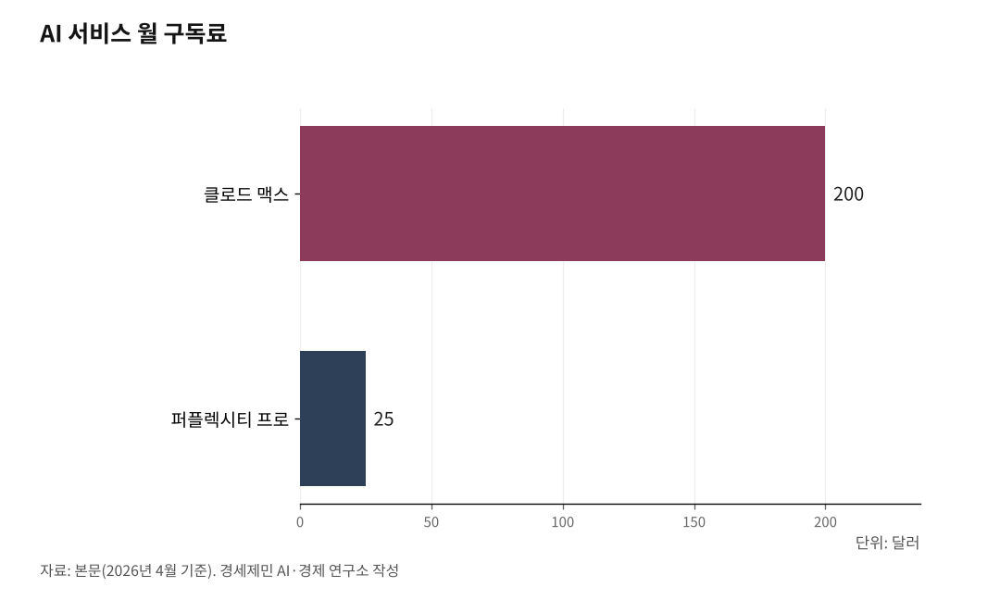

[AI 메모리 전쟁②] 토큰 격차가 학력 격차가 된다
AI 시대 교육 불평등의 새로운 얼굴
메모리를 살 돈이 성적을 좌우하는 시대가 온다
국가 토큰 지원이 논의되는 이유
1. AI 구독료가 하숙비·학원비를 대체한다 — 교육 필수재가 된 토큰
AI가 알아서 일해주는 비서(에이전트) 시대가 열리고 있다. 머지않아 학생들은 과제를 하고 공부하기 위해 AI 비서에 가입하는 것이 필수가 된다. 과거에 부모님께 하숙비와 학원비를 타서 썼듯, 앞으로는 "AI 가입비와 토큰을 사달라"고 요구하는 것이 일상이 된다. AI 구독료는 이미 월 수만 원에서 수십만 원에 이른다.

토큰은 AI가 글을 읽고 쓰는 기본 단위다. AI가 한 번에 기억할 수 있는 토큰이 많을수록 답변이 정밀해진다. 현재 클로드 무료 버전은 20만 토큰, 월 200달러 유료 버전은 100만 토큰까지 담을 수 있다. 같은 AI라도 기억 용량이 5배 차이 나면 답변 품질이 확연히 다르다. 1편에서 설명한 것처럼, 이것은 통계학에서 표본이 클수록 예측 오차가 줄어드는 원리와 같다.

2. 부모의 경제력이 AI 기억력을 결정한다 — 메모리 자본주의의 등장
문제는 토큰을 사려면 돈이 든다는 점이다. 클로드 맥스 월 200달러(약 28만 원), 퍼플렉시티 프로 월 25달러(약 3만5,000원), 제미나이 프로까지 합치면 매달 수십만 원이다. 제한 없이 토큰을 쓸 수 있는 학생과 무료 버전만 쓰는 학생 사이에 답변 품질 격차가 벌어진다.
무료 버전은 기억 창(컨텍스트 윈도)이 좁고 메시지 수가 제한된다. 대화가 길어지면 AI가 앞부분을 잊어버리고 엉뚱한 답을 내놓는다. 유료 버전은 기억 창이 넓어서 긴 보고서를 통째로 읽고 맥락을 유지한 채 답한다. 부모의 경제력이 자녀가 쓰는 AI 기억력을 결정하고, 그것이 과제 품질과 성적으로 이어지는 구조다.
3. "너는 몇 테라바이트짜리 사람이야?" — 토큰 격차가 계층 격차로 굳어진다
미래에는 "집에 메모리가 몇 테라바이트 있느냐"가 사회적 위치를 가늠하는 기준이 될 수 있다. AI 비서가 나를 제대로 이해하려면 내 과거 기록, 대화 내역, 문서, 동영상까지 통째로 읽어야 한다. 이 데이터를 저장하고 처리하려면 거대한 메모리가 필요하고, 그 메모리를 확보하려면 돈이 든다.
토큰을 넉넉히 쓸 수 있는 학생은 AI에게 방대한 자료를 던져주고 정밀한 맞춤형 도움을 받는다. 토큰이 부족한 학생은 AI에게 줄 수 있는 자료가 적어서 답변 품질이 떨어진다. 같은 시험을 치르는데 한쪽은 백과사전을 펼쳐놓고, 한쪽은 쪽지 한 장만 들고 들어가는 셈이다. 이것은 개인의 노력으로 극복하기 어려운 구조적 격차다.
4. AI가 내 일생을 기억한다 — 개인정보 집중화와 사생활 문제
AI 비서가 똑똑해지려면 나의 모든 데이터를 수집해야 한다. 대화 기록, 위치 정보, 문서, 동영상까지. 인간은 시간이 지나면 과거의 쓸데없는 기억을 잊어버린다. 그러나 AI는 잊지 않는다. 사용자가 죽더라도 그 기록을 역사책처럼 보존한다.
"나에 관한 정보를 내가 쓰는 AI만 알게 하고 싶다"는 것은 개인의 소망일 뿐이다. 거대 AI 기업이 내 데이터를 오직 나만을 위해 쓴다는 보장은 없다. AI 안경 같은 장치가 보급되면 하루 종일 보고 듣는 모든 것이 데이터로 수집된다. 이 데이터는 안경이 아니라 후방의 데이터센터로 전송돼 저장되고 분석된다. 과거에 CD로 음악을 듣다가 클라우드 스트리밍으로 넘어간 것처럼, 결국 우리 일생 기록도 거대 기업 클라우드에 종속될 가능성이 높다. AI가 진화할수록 '안전한 개인화'와 '신뢰'를 어떻게 담보할 것인지는 시민사회 앞에 놓인 숙제다.
5. 국가 차원 토큰 복지 논의가 시작됐다 — 공정한 출발선을 위한 조건
토큰 격차가 학력 격차로 굳어지는 것을 막기 위한 공공 개입 논의가 본격화되고 있다. 국가가 세금을 투입해 모든 학생에게 일정 수준 이상의 토큰을 보장하는 방안이 미래 교육의 핵심 의제로 떠오르고 있다.
AI 성능이 사실상 자본(메모리를 살 수 있는 돈)에 좌우되는 구조에서, 경제력 때문에 지식 접근성이 차단되는 현상은 교육 기회 균등을 무너뜨린다. 과거에 국가가 교과서를 무상으로 보급하고 급식을 지원한 것처럼, AI 시대에는 토큰 지원이 같은 역할을 할 수 있다. 현재 AI 구독료는 월 수십만 원 수준이다. 대학생 한 명에게 연간 수백만 원의 토큰 비용이 든다면, 이것은 등록금에 버금가는 교육비 부담이 된다. 폭발적으로 늘어나는 메모리 비용을 개인에게만 떠넘기지 않고 국가가 분담하는 것은, 미래 세대 계층 고착화를 막기 위한 선택이 될 수 있다.
[참고자료]
· Anthropic, "Context windows", Claude API Docs, 2026.
· Anthropic, "How do usage and length limits work?", Claude Help Center, 2026.
· Agarwal, N., Dalal, S. R. & Misra, V., "The Bayesian Geometry of Transformer Attention", arXiv:2512.22471, 2025.12.27.
※ 이 기사는 인공지능을 활용해 작성했습니다.
관련기사
- [AI 메모리 전쟁③] 대학원생 92%가 AI를 쓰는데 진짜 공부는 어떻게
- 내 AI는 왜 자꾸 딴 소리를 할까 — 토큰과 메모리가 결정하는 AI 답변의 품질
- [AI 메모리 전쟁④] AI 산업 병목이 GPU에서 메모리로 옮겨간다
- [AI 메모리 전쟁⑤] 개인투자자가 알아야 할 메모리 반도체의 현재와 미래
저작권자 © AI경세제민 무단전재 및 재배포, AI학습 및 활용 금지